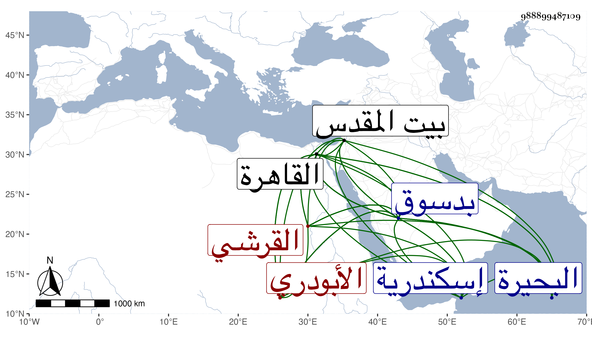

0902Sakhawi.DawLamic.ITO20230111-ara1.EIS1600.988899487109
Biography ID: 988899487109
1056
علي بن محمد بن علي بن ذي الاسمين أيوب عثمان بن ذي الاسمين عبد العزيز عبد المجيد الشهير بأبي المجد بن محمد بن عبد العزيز بن قريش نور الدين وربما كني بأكبر أولاده النجم فيقال أبو نجم الدين بن نجم الدين القرشي الأبودري بفتح الهمزة ثم موحدة ودال مهملة ثم راء مشددة نسبة لأبي درة من أعمال البحيرة ثم الدسوقي بضم المهملتين المالكي ويعرف بسنان لسن كانت له بارزة وأيوب في نسبه هو أخو الشيخ إبراهيم الدسوقي صاحب الأحوال . ولد تقريبا سنة خمس وسبعين وسبعمائة بأبي درة وانتقل منها وهو صغير بعد موت والده وحفظ القرآن عند الشهاب التروجي وتلاه لأبي عمر وعلي ابن عامر بلقانه وحفظ عنده الشاطبيتين ثم قدم القاهرة فحفظ بها أيضا العمدة والرسالة ومختصر ابن الحاجب كلاهما في المذهب والملحة وألفية ابن مالك ، وعرض على الزين قاسم السمسطائي النويري ولازمه في بحث الرسالة والمختصر معا بل رافقه في سماع الحديث وبحث العمدة على الزين عبيد البشكالسي ومن شيوخه في السماع الصلاح الزفتاوي والتنوخي وابن الشيخة وابن الفصيح والعراقي والهيثمي والأبناسي والدجوي والغماري والمراغي والنور الهوريني والجمال عبد الله الرشيدي وناصر الدين نصر الله الحنبلي والسويداوي والحلاوي وأكثر من المسموع وكان يخبر أنه أخذ الخرقة الدسوقية عن ابن عمه الجمال عبد الله بن محمد بن موسى المنوفي بدسوق في سنة نيف وثمانمائة عن أبيه عن جده موسى عن شقيقه الشيخ إبراهيم ، وقطن دسوق من سنة اثنتي عشرة إلى أن مات شيخ المقام الإبراهيمي بها وهو ابن عمه الشمس محمد بن ناصر الدين محمد بن جلود في سنة أربع وثلاثين فاستقر عوضه في المشيخة فباشرها وصرف عنها مرارا ، وحج وزار بيت المقدس ودخل إسكندرية مرارا ، وحدث سمع منه الفضلاء حملت عنه الكثير بالقاهرة ثم بدسوق وارتفق بما كان يصله به الطلبة في سني الغلاء لكونه كان كثير العيال جدا وكان حينئذ منفصلا عن المشيخة ، وكان خيرا ضابطا صدوقا ثقة ثبتا ساكنا وقورا صبورا على الإسماع متواضعا سليم الفطرة مستحضر الفوائد. مات في ليلة الجمعة حادي عشر رمضان سنة تسع وخمسين بدسوق على مشيختها ودفن عند الضريح البرهاني وخلف أولادا رحمه الله وإيانا .
